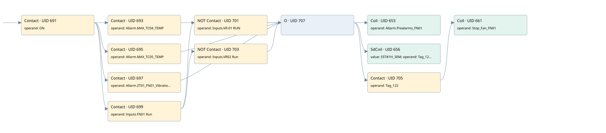

preallarm fn01
motors 1 · 검색 색인 순서 21 · 원본 내부 NID 추정 21
백업 PLF 원본의 2796606 바이트 위치에서 복원한 XML. 검색 문서 1950의 객체 키 16102200a411000000000000와 연결했다. 이름 해석 12/12개. 남은 RefId는 상수 또는 미해석 참조다.
연결 구조 다시 그리기
원본 Part/PCon/Wire를 이용한 연결도다. TIA 화면의 래더 배치 또는 실행 결과를 재현한 그림은 아니다. 핀 연결은 아래 표와 원본 XML을 기준으로 읽는다. 노드 위에 마우스를 두면 피연산자 이름을 볼 수 있다.

접점·코일·블록과 피연산자
| Part UID | Gate | Negated 핀 | 연결 피연산자 |
|---|---|---|---|
| 691 | Contact | operand = ON | |
| 693 | Contact | operand = Allarm.MAX_TC04_TEMP | |
| 695 | Contact | operand = Allarm.MAX_TC05_TEMP | |
| 697 | Contact | operand = Allarm.ZT01_FN01_Vibration | |
| 699 | Contact | operand = Inputs.FN01 Run | |
| 701 | Contact | operand | operand = Inputs.VR-01 RUN |
| 703 | Contact | operand | operand = Inputs.VR02 Run |
| 707 | O | ||
| 653 | Coil | operand = Allarm.Prealarms_FN01 | |
| 656 | SdCoil | value = S5T#1H_30M; operand = Tag_122 | |
| 705 | Contact | operand = Tag_122 | |
| 661 | Coil | operand = Stop_Fan_FN01 |
접점 경로를 펼친 조건식
Contact·O/A·비교기의 원본 연결을 읽기 쉽게 펼친 보조 해석이다. POWER는 전원 레일 시작을 뜻한다. 호출 블록·에지·타이머의 내부 동작과 다중 쓰기 순서는 이 표로 실행 검증하지 않았다. 미해석 핀과 RefId는 원문 연결표에서 확인한다.
| UID | 동작 | 대상 | 원본 접점 경로 | 내용 |
|---|---|---|---|---|
| 653 | Coil | Allarm.Prealarms_FN01 | ((ON AND Allarm.MAX_TC04_TEMP) OR (ON AND Allarm.MAX_TC05_TEMP) OR (ON AND Allarm.ZT01_FN01_Vibration) OR ((ON AND Inputs.FN01 Run) AND NOT [Inputs.VR-01 RUN]) OR ((ON AND Inputs.FN01 Run) AND NOT [Inputs.VR02 Run])) | 조건에 따른 Coil 기록 |
| 656 | SdCoil | Tag_122 | ((ON AND Allarm.MAX_TC04_TEMP) OR (ON AND Allarm.MAX_TC05_TEMP) OR (ON AND Allarm.ZT01_FN01_Vibration) OR ((ON AND Inputs.FN01 Run) AND NOT [Inputs.VR-01 RUN]) OR ((ON AND Inputs.FN01 Run) AND NOT [Inputs.VR02 Run])) | 시간 동작 SdCoil; 타이머 의미 추가 확인 / 시간 인자 S5T#1H_30M |
| 661 | Coil | Stop_Fan_FN01 | (((ON AND Allarm.MAX_TC04_TEMP) OR (ON AND Allarm.MAX_TC05_TEMP) OR (ON AND Allarm.ZT01_FN01_Vibration) OR ((ON AND Inputs.FN01 Run) AND NOT [Inputs.VR-01 RUN]) OR ((ON AND Inputs.FN01 Run) AND NOT [Inputs.VR02 Run])) AND Tag_122) | 조건에 따른 Coil 기록 |
원본 배선 연결
| Wire UID | 동일 Wire 연결 끝점 |
|---|---|
| 708 | Powerrail {} ↔ Part 691.in |
| 674 | ORef 662 (ON) ↔ Part 691.operand |
| 692 | Part 691.out ↔ Part 693.in ↔ Part 695.in ↔ Part 697.in ↔ Part 699.in |
| 675 | ORef 663 (Allarm.MAX_TC04_TEMP) ↔ Part 693.operand |
| 694 | Part 693.out ↔ Part 707.in1 |
| 676 | ORef 664 (Allarm.MAX_TC05_TEMP) ↔ Part 695.operand |
| 25 | Part 695.out ↔ Part 707.in2 |
| 677 | ORef 665 (Allarm.ZT01_FN01_Vibration) ↔ Part 697.operand |
| 698 | Part 697.out ↔ Part 707.in3 |
| 678 | ORef 666 (Inputs.FN01 Run) ↔ Part 699.operand |
| 700 | Part 699.out ↔ Part 701.in ↔ Part 703.in |
| 679 | ORef 667 (Inputs.VR-01 RUN) ↔ Part 701.operand |
| 702 | Part 701.out ↔ Part 707.in4 |
| 680 | ORef 668 (Inputs.VR02 Run) ↔ Part 703.operand |
| 704 | Part 703.out ↔ Part 707.in5 |
| 683 | Part 707.out ↔ Part 653.in ↔ Part 656.in ↔ Part 705.in |
| 684 | ORef 669 (Allarm.Prealarms_FN01) ↔ Part 653.operand |
| 685 | ORef 670 (S5T#1H_30M) ↔ Part 656.value |
| 686 | ORef 671 (Tag_122) ↔ Part 656.operand |
| 687 | ORef 672 (Tag_122) ↔ Part 705.operand |
| 27 | Part 705.out ↔ Part 661.in |
| 689 | ORef 673 (Stop_Fan_FN01) ↔ Part 661.operand |
식별자 해석 근거 12개
| ORef UID | RefId | 이름 | IdentXmlPart 파일 | 해석 방법 |
|---|---|---|---|---|
| 662 | 1 | ON | 0602-IdentXmlPart.xml | UID/RID + search-text + NID agreement |
| 663 | 105 | Allarm.MAX_TC04_TEMP | 0604-IdentXmlPart.xml | UID/RID + search-text + NID agreement |
| 664 | 106 | Allarm.MAX_TC05_TEMP | 0604-IdentXmlPart.xml | UID/RID + search-text + NID agreement |
| 665 | 107 | Allarm.ZT01_FN01_Vibration | 0604-IdentXmlPart.xml | UID/RID + search-text + NID agreement |
| 666 | 250 | Inputs.FN01 Run | 0604-IdentXmlPart.xml | UID/RID + search-text + NID agreement |
| 667 | 251 | Inputs.VR-01 RUN | 0604-IdentXmlPart.xml | UID/RID + search-text + NID agreement |
| 668 | 252 | Inputs.VR02 Run | 0604-IdentXmlPart.xml | UID/RID + search-text + NID agreement |
| 669 | 111 | Allarm.Prealarms_FN01 | 0604-IdentXmlPart.xml | UID/RID + search-text + NID agreement |
| 671 | 113 | Tag_122 | 0602-IdentXmlPart.xml | UID/RID + search-text + NID agreement |
| 670 | 112 | S5T#1H_30M | 0606-IdentXmlPart.xml | literal candidate: UID/RID/NID + nearby named declarations + search-text agreement |
| 672 | 113 | Tag_122 | 0602-IdentXmlPart.xml | UID/RID + search-text + NID agreement |
| 673 | 114 | Stop_Fan_FN01 | 0605-IdentXmlPart.xml | UID/RID + search-text + NID agreement |
검색 코드 보조 자료
참조 명칭을 찾기 위한 자료이며 실행 순서나 AND/OR 관계는 위 연결표로 확인한다.
"on" "allarm".max_tc04_temp "allarm".prealarms_fn01 "allarm".max_tc05_temp "allarm".zt01_fn01_vibration "inputs"."fn01 run" "inputs"."vr-01 run" "inputs"."vr02 run" "tag_122" s5t#1h_30m "tag_122" #stop_fan_fn01